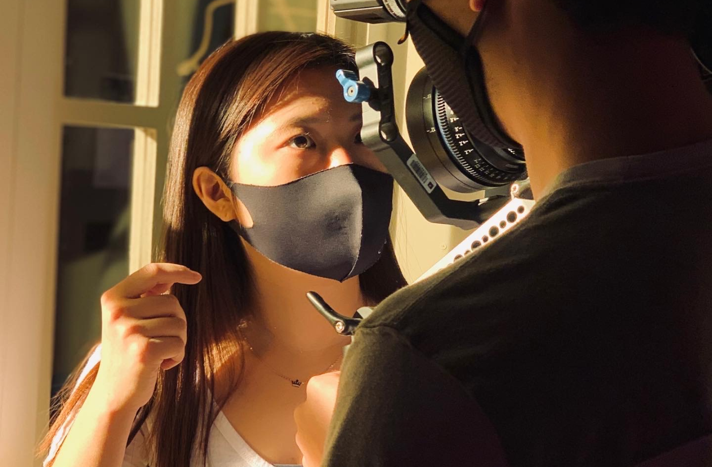

1. CURIOSITY
I was a girl who never stop asking "Why?". Curious of surroundings and socially inquisitive, I spent my childhood exploring surroundings and how we interact with those surroundings.



2. EMPATHY
Growing up in 4 different countries and adapting to their unique cultures, I learned to empathise with diverse people with their different needs.
3. LOVE FOR LEARNING
In college, following my passion, I took many project-driven courses. Learning and assimilating ideas quickly, I found my passion in creating delightful experiences in digital space.
4. COMMUNICATION
Working with designers, developers, and artists, I developed productive communication skills that are essential for collaboration. I listen carefully and welcome constructive criticism.
5. PROBLEM SOLVING
It frustrates me when the products aren't made friendly for the users. I find purpose in providing creative design solutions to complex problems people face in everyday life.